LBR：缓解大模型推荐中的长度偏置
这篇论文讨论的是 LLM-based recommendation 中一个很具体、也很容易被线上实现忽略的问题：当候选物品用自然语言标题、摘要或描述表示时，物品会被 tokenizer 切成不同长度的 token 序列，模型在读历史行为和生成目标物品时都会受到长度影响。论文一作主机构为浙江大学，合作机构还包括香港中文大学、中国科学技术大学和 Bangsun Technology；论文入口为 arXiv:2607.04270。代码/项目页方面，PDF 与事实包给出 Void-JackLee/LBR，但本轮直接访问该页面返回 404，因此本文只把它记录为论文给出的项目入口，具体仓库可访问性仍需后续复核。
LLM 推荐把物品推荐改写为 token 级生成任务后，物品文本长短不一会同时污染输入侧偏好建模和输出侧打分：长物品在上下文中占更多 token，容易获得更大的累计注意力；短物品在累计自回归对数似然下天然更占便宜，而普通长度归一化又可能反过来偏向长物品并损害推荐精度。
1. 背景和问题
LLM 推荐近两年的一个主流路线，是把序列推荐中的历史点击、购买或浏览物品转换成自然语言 prompt，再让大模型在受约束的候选空间里生成下一个物品。这个范式看起来很自然：物品标题或描述本身含有语义，LLM 能利用语言理解能力把历史序列中的“相似品类”“用途”“风格”或“搭配关系”转成下一步推荐。但 LBR 指出的关键点是，推荐系统中的文本并不是同长句子。一个玩具可能只有两三个 token，一个图书标题或办公用品描述可能有十几个甚至几十个 token；当这些文本被直接摊平成 prompt，模型看到的不是“一个物品一个单位”，而是“一个物品对应若干 token”。因此，长度不再只是展示层属性，而会进入 attention、loss、decoding score 和最终排序。
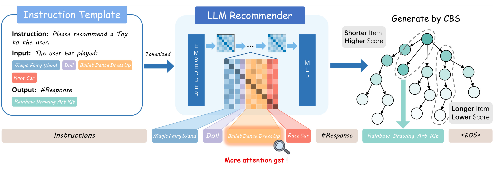
Figure 1 把问题放在同一条推荐链路里：左侧是用户历史物品被写进 instruction template，中间是 LLM recommender 读取这些 token，右侧是 constrained beam search 生成候选物品。图中同一历史物品的多个 token 会在 self-attention 中反复参与交互，所以长标题天然有更多位置接收注意力；而在输出侧，候选物品必须按 token 逐步生成，长候选会累积更多非正的 log probability，于是原始累计分数偏短。这个图值得放在背景部分，因为它不是 LBR 的算法框架，而是把输入侧和输出侧两个偏置源同时暴露出来：前者让长物品更会“影响用户表示”，后者让短物品更容易“被生成出来”。对推荐工程而言，这意味着即使候选物品真实相关性相同，标题长度也可能改变模型内部证据权重和最终排序。
论文把输入侧偏置称为 input-side length bias。Transformer 的 self-attention 是 token-wise 的：每个 token 都有 query、key、value，并对上下文其他 token 分配注意力。如果一个物品被切成更多 token，它就有更多 token-level 位置参与 attention aggregation。常规推荐模型里，一个 item embedding 通常是一个向量；但在 LLM 推荐里，一个 item 可能变成多个 token embedding。于是“物品级影响力”应当看这些 token 的累计注意力，而不是单个 token 权重。LBR 的实验显示，累计注意力和物品 token 长度存在明显正相关，这说明长描述物品可能因为表达更长而不是因为更相关，就在用户偏好建模中被放大。
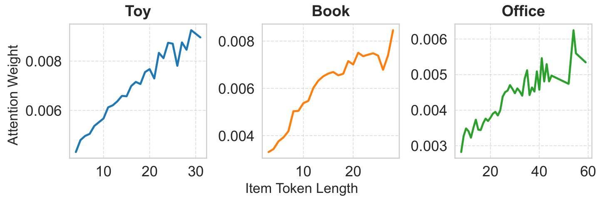
Figure 3 直接验证了这一点。Toy、Book、Office 三个数据集上，横轴是 item token length，纵轴是 attention weight，曲线整体随长度上升。这个结果不是说长物品一定被推荐更多，而是说在输入建模阶段，长物品更容易把自己的 token 质量累积成较大的 item-level attention mass。推荐系统中这类偏置很隐蔽，因为离线看单个 token 的 attention 不一定异常，聚合到 item 粒度才会出现趋势。如果线上模型把标题、query、类目、品牌等多段文本拼接进 prompt，类似问题会更强：文本丰富的供应方物品会有更多进入模型内部计算的机会，短标题物品即使相关性更高，也可能在偏好表示中被稀释。
输出侧偏置来自 constrained decoding。LLM 推荐不是在全词表随便生成，而是在候选物品构成的 Trie 上逐步选择合法 token，直到到达某个物品叶子节点。传统自回归打分把每一步 log probability 加起来，长序列会累积更多负数，因此短物品占优。机器翻译里常见的 length penalty 会把分数除以长度的某个幂，但 LBR 认为这个办法搬到推荐场景会失效，因为 Trie 里的每一步不是同等难度：有的节点有很多合法分支，选对 token 信息量高；有的节点只有一两个分支，选中 token 几乎是顺着路径走，信息量低。
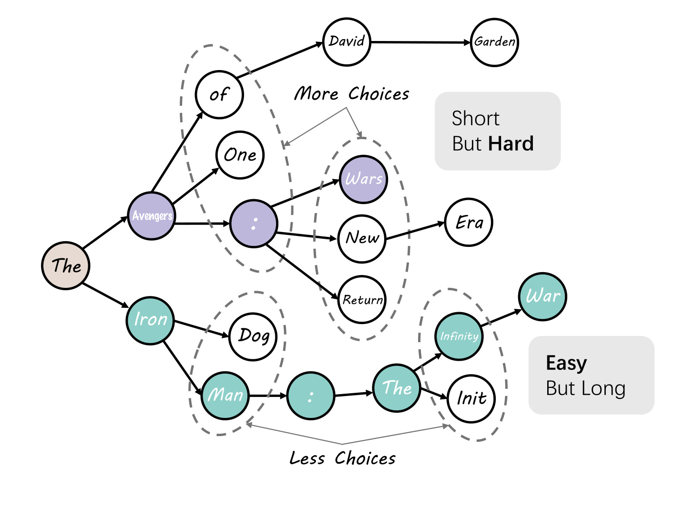
Figure 2 展示了这个“每一步难度不同”的结构。根节点到叶子的路径不只是 token 个数差异，还包含分支宽度差异：从一个有很多候选分支的节点选中目标 token，和从一个几乎没有选择的节点继续向下走，代表的决策信息量并不一样。图中 “Short but Hard” 与 “Easy but Long” 的对比说明，短物品可能包含高分支、高不确定性的 token，长物品却可能由多个低分支、容易预测的 token 组成。若只按原始 token 数除分数，长物品里那些低信息 token 会被当成同等长度单位，导致长路径被过度补偿。这个观察是 LBR 区别于普通 length normalization 的核心，也是它把“长度”改写成“有效信息长度”的原因。
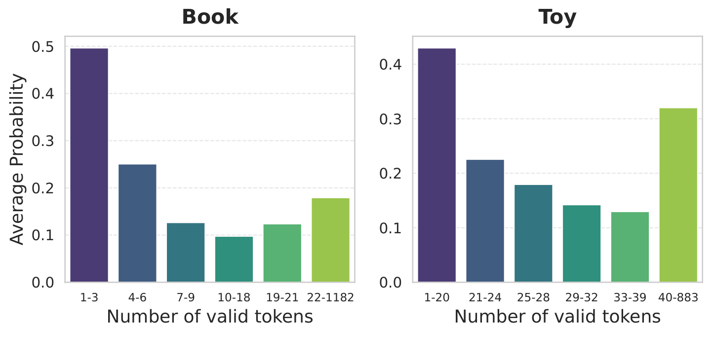
Figure 4 给出经验支持：横轴按 valid-token set 的大小分组，纵轴是 average probability。Book 和 Toy 上都可以看到低分支节点的平均概率更高，高分支节点概率更低。换句话说，Trie 里的 easy token 往往来自选择空间很窄的位置，它们对识别物品的贡献小，却在普通自回归分数中占据一个完整 token 步；hard token 则位于分支宽的位置，一个选择决定了更多候选分叉。LBR 对这个图的使用很关键：它不是简单说“长物品会被惩罚”，而是进一步指出“长物品里的 token 并不都等价”，所以粗暴平均会产生第二种偏置。若一个长标题的后缀大多落在低分支路径上，标准长度归一化会把这些接近确定的 token 当作同等证据折扣，导致长物品得分被抬高；EILN 后续正是用分支宽度重新估计每一步的决策价值。
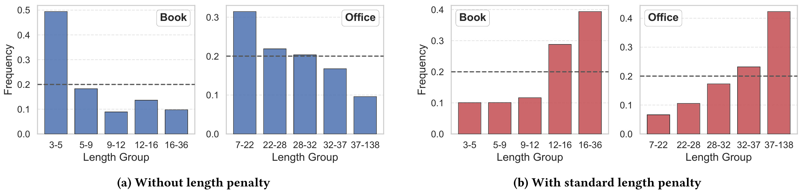
Figure 5 把输出侧偏置拆成两个方向。没有 length penalty 时，推荐分布明显偏向较短长度组；采用标准 length penalty 后，分布又向较长长度组倾斜。虚线代表测试集中由真实交互隐含的理想曝光分布，蓝色柱和红色柱分别说明两个极端：不归一化会让短物品在累计 log-likelihood 下获益，按 token 数归一化则会让长物品里的低信息 token 获得过多折扣。对实际排序系统来说，这比单纯“短文本/长文本哪个更好”更难处理，因为调一个长度惩罚系数可能只是把偏置从一端推到另一端。LBR 的问题定义因此很清楚：它要同时修输入 attention 的累计长度优势，以及输出 constrained decoding 的有效长度误计。
2. 方法
2.1 Length-Aware Attention Calibration
LBR 的第一部分是 Length-Aware Attention Calibration，目标是把 item length 对累计 attention 的乘性优势从 logit 层抵消掉。论文先把一个物品长度为 $l$ 时的期望累计注意力趋势记为 $g(l)$，可以理解成“长度越长，item-level attention mass 越容易被自然放大”的经验函数。普通 attention 权重可以写成 query-key 相似度加 mask 后过 softmax；LBR 在这个 logit 里加入一个与 token 所属物品长度相关的偏移项。核心公式是：
符号解释：$A^\prime_{uv}$ 是校准后 query token $u$ 对 context token $v$ 的 attention；$Q_u$、$K_v$ 分别是 query 和 key；$M_{uv}$ 是 causal mask 或结构 mask；$l_v$ 是 token $v$ 所属物品的 token 长度；$\delta(l_v)$ 是 LBR 新增的长度校准项。这里的重点是，校准发生在 softmax 之前，所以它不是事后重加权 attention，而是直接改变 token 之间竞争 attention mass 的 logit。对于辅助 token，论文把长度设为历史物品平均长度，避免 instruction 或 separator 被错误归到某个物品。
论文进一步设定：
符号解释：$g(l_v)$ 表示长度 $l_v$ 对累计 attention 的期望放大趋势；$-\log(g(l_v))$ 是在 logit 空间中抵消这个趋势的偏移。由于 softmax 会对 logit 做指数变换，logit 中减去 $\log(g(l_v))$ 等价于在指数权重里除以 $g(l_v)$。这也是 LAAC 的直觉：如果长物品因为长度获得了大约 $g(l)$ 倍的累计 attention 优势，就在每个 token 进入 softmax 竞争前把这部分趋势抵消。LBR 没有强行截断标题，也没有把 item 文本压成语义 ID，而是在模型内部把长度造成的注意力优势显式参数化并交给推荐目标学习。 论文实际把 $g(l)$ 建模为线性函数 $g(l)=al+b$，原因是 Figure 3 呈现近似线性趋势，而且线性形式只增加很少参数，便于嵌入现有 LLM 推荐骨干。
这个设计的一个边界是，$g(l)$ 学到的只是“长度与累计注意力之间的平均趋势”，不是每个具体物品的真实相关性。若某个长描述物品确实高度相关，LAAC 不应把它完全压低；若某个短物品无关，也不应因为短而被放大。论文把校准项和主推荐目标端到端训练，而不是先离线拟合固定曲线，正是为了让模型在精度目标约束下学习适当的抵消强度。Appendix F 还给了一个期望意义下的说明：若校准前 item-level mass $Z_u(i)$ 的期望可以分解为常数 $\kappa_u$ 与长度趋势 $g(l_i)$ 的乘积，那么校准后除以 $g(l_i)$，期望 attribution 会近似不依赖长度。这不是严格保证所有样本公平，而是说明 LAAC 的数学方向和 Figure 3 的经验趋势一致。
2.2 Decoding with Effective Information Length Normalization
LBR 的第二部分针对输出侧。普通解码分数是累计对数似然：
符号解释：$y=(y_1,\ldots,y_{|y|})$ 是候选物品的 token 序列；$P_\theta(y_k\mid y_{<k},X)$ 是在 prompt $X$ 和已生成前缀 $y_{<k}$ 下生成第 $k$ 个 token 的概率。因为每个 log probability 通常不大于 0，序列越长，求和越容易变得更负，所以短物品会天然获得高分。常规 length normalization 写作：
符号解释：$|y|$ 是原始 token 数，$\alpha$ 控制长度惩罚强度。这个式子的问题在于，它默认每个 token 都提供同等信息。如果一个长物品的后半段主要是低分支 Trie 节点，那么这些 token 虽然让 $|y|$ 变大，却并没有等量增加识别物品的难度；除以 $|y|^\alpha$ 会把它们当成高价值长度单位，导致长物品被过度补偿。因此，LBR 反对的是“按 token 数平均”的长度观，而不是反对归一化本身。
LBR 用 Hartley entropy 定义每一步 token 的信息量：
符号解释：$\mathcal{V}_k$ 是 Trie 约束下第 $k$ 步的合法 token 集合，$|\mathcal{V}_k|$ 是分支数，$\mu_k$ 是该步最大可区分信息量。分支越多，这一步选择越难、信息量越大；分支越少，这一步越接近确定性延续。接着，候选物品 $y$ 的 Effective Information Length 被定义为：
符号解释：$U_y$ 是从 Trie 根节点走到候选物品叶节点需要解析的总不确定性，以 bit-like 的信息长度表示。它不再等于 token 数，而是把“每一步有多少有效选择”纳入长度度量。最终打分为：
符号解释：$s_{\mathrm{EIF}}(y)$ 是按有效信息长度归一化后的候选分数；$\mu_k$ 既作为 token log probability 的权重，也参与分母 $U_y$。高分支节点的 log probability 代表更有信息的选择，因此权重大；低分支节点即使概率高，也不会因为数量多而支配候选分数。这个式子比普通 length penalty 多了一层结构信息：它承认 constrained decoding 中 token 的预测难度不同，并把候选物品的“长度”改成 Trie 路径上的决策复杂度。
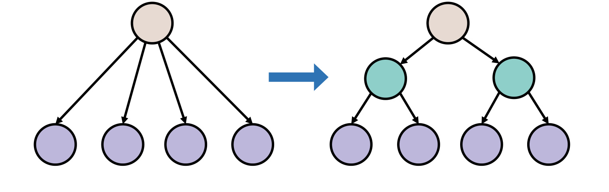
Figure 12 是 EILN 的直觉图。一个有 $H$ 个分支的 Trie 节点，可以视作大约 $\log_2 H$ 层二元决策；如果只有少数分支，就不需要很多二元问题即可定位目标 token。这个图放在方法章，是因为它解释了公式中 $\log_2 |\mathcal{V}_k|$ 的来源：LBR 不是随意给高分支 token 更高权重，而是把多分支选择转化成等价的二元决策深度。对工程实现来说，这个信息量可以从候选 catalog 的 Trie 结构预先或在线轻量计算，不要求重新训练 tokenizer，也不要求把物品标题改写成固定长度。它也提示了一个可复用思想：在任何 constrained generation 推荐或检索系统中，解码路径的结构复杂度都可能比表面 token 数更适合作为归一化单位。
2.3 Practical Advantages and Integration
从实现角度看，LBR 很克制。LAAC 只在 attention logits 中加入一个长度相关 offset；EILN 只在 decoding score 里替换原始长度归一化，并给每个 token 的 log probability 乘上信息量权重。论文声称额外复杂度是 $O(N)$，其中 $N$ 覆盖输入和输出 token 总数。这意味着它不像 S-DPO 一类偏好优化方法需要额外参考模型、负样本或大幅增加训练数据，也不像等长预处理或 semantic ID 方法会改变物品文本本身。它更像是一层偏置校准：保留 LLM 对自然语言物品描述的理解能力，同时减少长度这个非相关因素对 attention 和 decoding 的影响。
不过，LBR 的轻量也意味着它依赖两个前提。第一，长度偏置必须能被相对简单的趋势函数和 Trie 信息量捕捉；如果某个业务中的描述长度同时强相关于真实质量、价格带、品类或供应方策略，那么只做长度校准可能会和业务目标发生张力。第二，EILN 假设候选生成使用清晰的 Trie 约束；如果线上系统采用 embedding retrieval、reranker 打分或混合召回，而不是 token-by-token catalog decoding，那么 EILN 需要重新映射到对应的候选空间结构。对 LLM4Rec 研究而言，LBR 的价值在于它把偏置定位到具体算子：attention logit 与 constrained decoding score，而不是停留在“LLM 推荐有偏”这个宏观判断。
3. 实验结果
3.1 实验设置
论文在 Amazon Toys and Games、Amazon Office Products、Amazon Books 三个真实数据集上做实验，采用 5-core 处理，把超过 11 个交互的用户序列用长度为 11 的滑窗拆分，并按时间顺序切成训练、验证、测试 8:1:1。处理后 Toy 有 19124 个用户、11758 个物品、165247 条交互；Office 有 4895 个用户、2414 个物品、53149 条交互；Book 有 16559 个用户、6344 个物品、151928 条交互。由于 Books 原始规模较大，论文先随机采样 100000 个 item 再做 5-core。模型统一使用 LLaMA3.2-3B 作为 LLM 架构，训练 5 个 epoch，推理阶段所有方法都使用 Constrained Beam Search，beam width 为 10，指标包括 NDCG@5、NDCG@10、Hit Ratio@5、Hit Ratio@10。
baseline 覆盖四类：传统序列推荐如 SASRec、DROS；LLM 增强的推荐如 DLLM2Rec、LLM-CF；直接用 LLM 作为推荐骨干的 BIGRec、CFT、LLaRA、S-DPO、IGD；以及面向 LLM 推荐偏置的 Reweight、D3。这个设置有两个优点。第一，LBR 不是只和一个弱 baseline 比，而是插在 BIGRec 与 LLaRA 两个代表性 LLM 推荐骨干上看增益。第二，D3、Reweight 等偏置方法进入比较，可以观察 LBR 是否真的比普通长度惩罚或重加权更适合这个问题。但也要注意，实验仍是离线序列推荐基准，不能直接外推到线上多目标排序、广告拍卖或包含曝光反馈的系统。
3.2 主结果
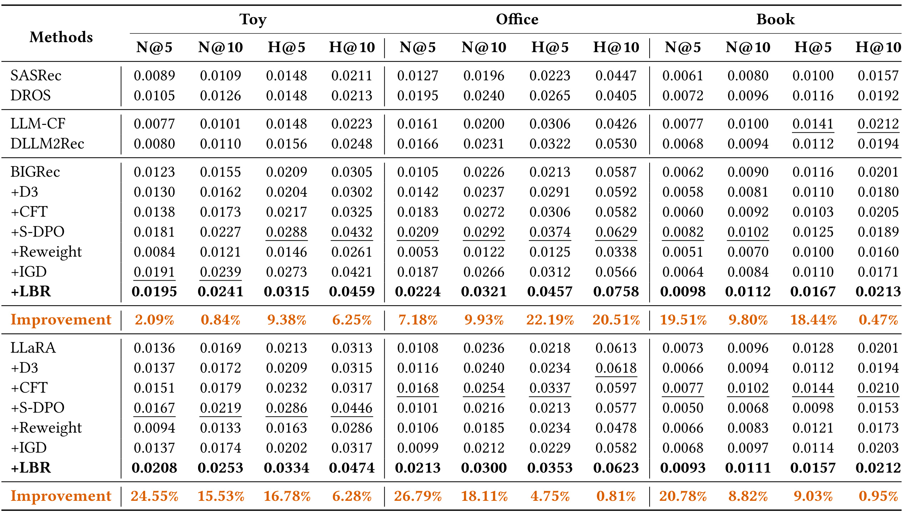
Table 1 是论文最主要的证据。以 BIGRec 为骨干时，+LBR 在 Toy、Office、Book 三个数据集上都取得表内最佳或并列最高的关键指标：Toy 的 NDCG@5 为 0.0195，Office 的 NDCG@5 为 0.0224，Book 的 NDCG@5 为 0.0098；相对各自最强 baseline，NDCG@5 改进分别为 2.09%、7.18%、19.51%。以 LLaRA 为骨干时，+LBR 同样显著提升，Toy、Office、Book 的 NDCG@5 分别为 0.0208、0.0213、0.0093，对应改进 24.55%、26.79%、20.78%。论文汇总称平均 NDCG@5 gain 为 16.82%。这些数值说明 LBR 的作用不是只修一个评分边界条件，而是能在两个不同 LLM 推荐骨干上改善准确率。更有价值的是，它在 Office 这类密度较高、Book 这类文本长度跨度较大的数据上都有效，说明长度偏置并非某个数据集偶然现象。
从表中也能看到，其他偏置或训练策略并不稳定。D3 有时略好于原始 BIGRec，但并没有系统性超越强 baseline；Reweight 在部分数据集甚至明显降低指标；IGD、CFT、S-DPO 各有提升但成本或泛化表现不同。LBR 的优势来自两个方向同时对齐：输入侧让模型不要因为长文本而过度关注某些历史物品，输出侧让生成分数按信息长度而非物理 token 数比较候选。对推荐工程迁移而言，主结果给出的信号是：如果已有 LLM4Rec 方案使用候选 Trie 和 token 级物品文本，先检查长度偏置和有效信息长度，可能比直接叠加更复杂的偏好优化更划算。
3.3 消融
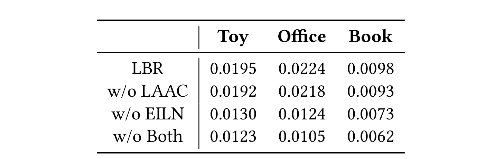
Table 3 拆开 LAAC 与 EILN。完整 LBR 在 Toy、Office、Book 上的 NDCG@5 分别是 0.0195、0.0224、0.0098；去掉 LAAC 后变成 0.0192、0.0218、0.0093，仍有较强表现但下降可见；去掉 EILN 后变成 0.0130、0.0124、0.0073，下降更大；两个都去掉则退回 0.0123、0.0105、0.0062，接近原始 BIGRec。这个消融说明 EILN 在当前实验中承担了更大的增益来源，尤其 Office 从 0.0224 掉到 0.0124，显示输出侧归一化对最终排序影响很强。LAAC 的贡献相对小一些，但它在 Book 上从 0.0098 到 0.0093 的差距仍说明输入侧 attention 校准不是可有可无。
这个表也帮助理解 LBR 的“分阶段去偏”。如果只修 attention，模型生成候选时仍可能被累计 log-likelihood 和普通长度效应影响；如果只修 decoding，用户历史偏好表示里长物品的 attention 优势仍可能保留。完整 LBR 同时处理两处，所以最终指标最好。这里需要谨慎的是，消融只报告 NDCG@5，没有展示每个指标和每个骨干上的完整拆分；因此不能说 LAAC 在所有场景中都弱于 EILN。更稳妥的结论是：在这三个 Amazon 数据集与 BIGRec 设置中，输出侧有效信息长度是主要驱动，输入侧校准提供额外补强。
3.4 长度偏置是否真的被缓解
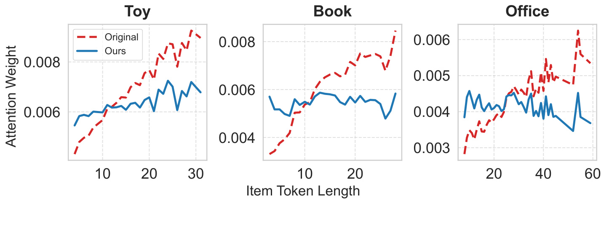
Figure 6 回到输入侧偏置本身。红色虚线代表原始模型，蓝色实线代表 LBR。Toy、Book、Office 三个图里，原始模型的 attention weight 随 item token length 增加而上升；加入 LBR 后曲线明显更平坦。这个结果对应 LAAC 的目标：不是让所有 token attention 相等，而是让“物品越长，累计注意力越大”的趋势减弱。对推荐系统来说，这比单纯看 NDCG 更重要，因为它证明增益方向和问题定义一致。若一个方法提升指标却没有减少长度相关性，那么它可能只是靠其他训练效应获益；LBR 至少在 Figure 6 中展示了输入侧机制确实命中偏置源。图中三条数据集曲线都没有被压成完全水平线，这也合理：真实相关性、品类语义和标题结构仍会影响 attention，LAAC 只是在平均趋势上削弱长度带来的额外优势，而不是抹掉所有物品差异。
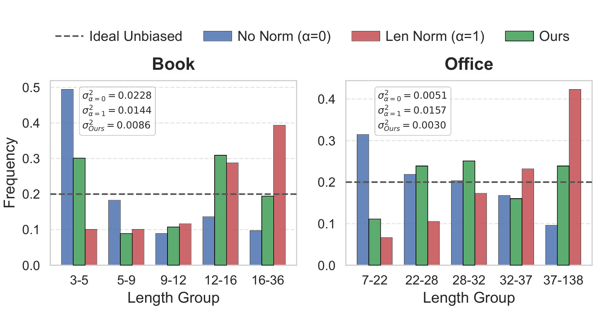
Figure 7 检查输出侧。图中按 item token length 把物品分成五组，每组在测试集中的累计 item frequency 相同，虚线表示理想无偏曝光比例。Book 上，无归一化的方差为 0.0228，标准 length normalization 的方差为 0.0144，LBR 降到 0.0086；Office 上，三者分别为 0.0051、0.0157、0.0030。这个图同时说明两个事实：不归一化并不公平，普通长度归一化也不一定公平；EILN 相对更接近测试集长度分布。尤其 Office 上标准 length normalization 的方差比无归一化还大，说明它可能把偏置推向长物品端。LBR 用 Trie 分支信息替代 token count 后，分布更接近理想线，这和 Figure 4 的分支概率观察互相支撑。
3.5 效率与成本
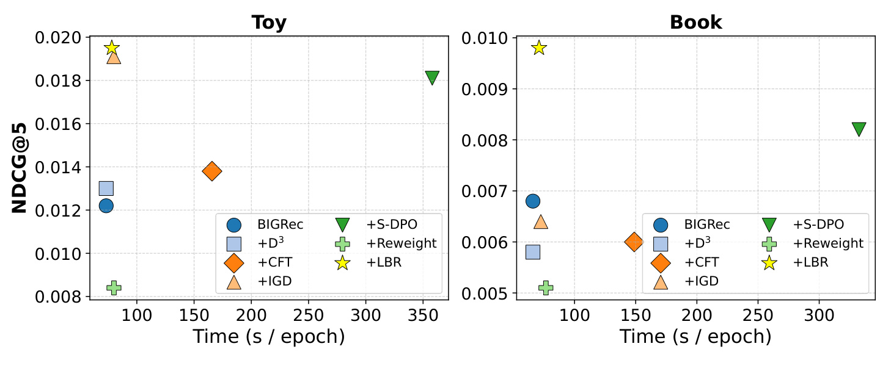
Figure 8 把 Toy 和 Book 上的 NDCG@5 与每个 epoch 的训练时间放在同一张散点图里。LBR 的点位在右上方向：精度最高或接近最高，但训练时间没有像 S-DPO 那样明显拉长。论文解释是，LBR 只增加两个可学习参数 $a$、$b$ 来建模 $g(l)=al+b$，以及 decoding 端的 $\mu_k$、$U_y$ 计算；这些都不需要额外参考模型、反事实样本倍增或复杂数据重构。因此它更适合做成已有 LLM 推荐链路上的偏置校准层。对线上或准线上系统来说，训练时间只是成本的一部分，真正部署还要看推理阶段 constrained decoding 的 Trie 信息量计算是否能缓存、候选更新时是否要重建统计、以及多路召回融合时是否仍能保持同一分数口径。论文说额外训练和推理开销 negligible，但没有给线上 latency 或大规模 catalog 更新实验，因此工程上仍需要单独压测。
3.6 朴素修正为什么不够
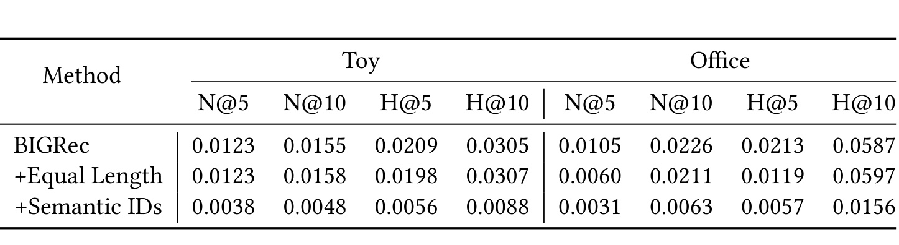
Table 4 对比了两个看似直接的输入侧修法：把每个 item token sequence 强制成长度 4，或者用 RQ-VAE 生成固定长度 Semantic IDs。结果并不好。Toy 上 Equal Length 的 NDCG@5 与 BIGRec 持平为 0.0123，Semantic IDs 降到 0.0038；Office 上 Equal Length 从 0.0105 降到 0.0060，Semantic IDs 降到 0.0031。这个表说明，长度偏置不能靠粗暴抹平文本长度解决。等长截断/填充会删掉或污染语义，Semantic IDs 虽然减少 token 长度差异，却弱化了 LLM 直接理解自然语言物品描述的优势，并需要额外学习离散码与语义之间的映射。LBR 保留自然文本，只校准 attention 与 decoding 中的长度效应，所以更符合 LLM 推荐的初衷。
论文还在附录中给了若干补充证据。Figure 9 讨论 length penalty 超参数 $\alpha$，说明即使 $\alpha$ 接近 0，长度偏置仍不完全消失；Figure 10 用 feature ablation 的 attribution score 补充验证输入侧长物品影响更大；Figure 11 检查训练交互在不同长度组上的分布，排除“短物品只是更热门”这一混杂解释。这些图没有全部纳入正文截图，是因为主文已经保留了更直接的 Figure 3、Figure 6、Figure 7 和 Table 4；但它们共同加强了一个判断：LBR 不是在修某个偶然指标，而是在修 LLM 推荐链路中由文本长度和 Trie 结构共同引入的系统性偏差。
4. 总结
4.1 我的判断
LBR 的贡献在于把 LLM4Rec 的长度偏置拆成两个可以落地修改的算子问题：输入侧 attention logit，输出侧 constrained decoding score。很多推荐公平性论文会把偏置描述成数据或目标函数问题，而这篇论文更贴近 LLM 推荐实现细节：item text 被 tokenizer 展开、历史物品在 prompt 中占据不同 token 数、候选生成在 Trie 上逐步约束。只要系统采用这类范式，长度就可能成为一个非相关但持续生效的排序特征。LBR 给出的 LAAC 与 EILN 都足够轻量，适合作为现有 LLM-based recommender 的诊断和修复 baseline。
我认为最值得复用的是 EILN 的思想：在受约束生成中，归一化单位不应是 token 数，而应是候选空间中的有效决策复杂度。这个想法可以迁移到生成式检索、语义 ID 推荐、query rewriting 后的候选生成，甚至某些 agentic retrieval 场景。只要输出被一棵 prefix tree、有限状态机或 schema grammar 约束，每一步的分支数都可能代表不同信息量。相比之下，LAAC 更依赖业务数据中长度与累计 attention 的趋势是否稳定；如果 item 文本长度本身含有质量信号，校准强度要谨慎调。
4.2 局限与风险
第一，实验集中在 Amazon 三个离线序列推荐数据集，任务口径是 next-item prediction，不能直接证明 LBR 在线上多目标系统中同样提升点击、转化、长期留存或供给公平性。第二，候选生成依赖 Trie-Constrained decoding；如果真实系统主要用向量召回加 cross-encoder rerank，EILN 需要重新定义“有效信息长度”。第三，LAAC 用线性 $g(l)=al+b$ 建模长度趋势，虽然简单高效，但可能无法覆盖品类、语言、标题模板和商家策略造成的非线性长度效应。第四，论文给出的 GitHub 项目入口本轮访问返回 404，代码可复现性需要后续检查；在代码不可用时，公式实现细节、beam search 集成方式和超参数搜索范围都需要读者自行补齐。第五，公平性分析主要围绕 item length group 的分布，尚未覆盖供应方、品类、价格、品牌或用户群体维度。
4.3 后续跟进
后续我会优先跟三类问题。第一，复现 EILN 在现有 LLM4Rec 代码中的接入成本，尤其是 Trie 分支数能否在大 catalog 下缓存，以及候选更新是否会引入额外维护成本。第二，把 length group fairness 和传统推荐指标一起看，检查 LBR 是否会牺牲某些高价值长尾、冷启动或高信息密度物品。第三，在多语言或跨域商品标题上测试 LAAC，因为中文、英文、品牌型号和营销短语的 tokenization 长度差异可能非常大。第四，检查它和 DPO、reranking、semantic ID 召回的组合效果：如果上游召回已经按语义 ID 生成候选，EILN 是否仍有增益；如果下游 reranker 重新打分，LBR 的生成分布改善是否会被覆盖。第五，等待或寻找可用代码实现，确认论文中 $\mu_k$ 权重在 beam search 中的实时更新方式，以及与 batch decoding、KV cache、beam pruning 的交互是否会影响真实推理吞吐。